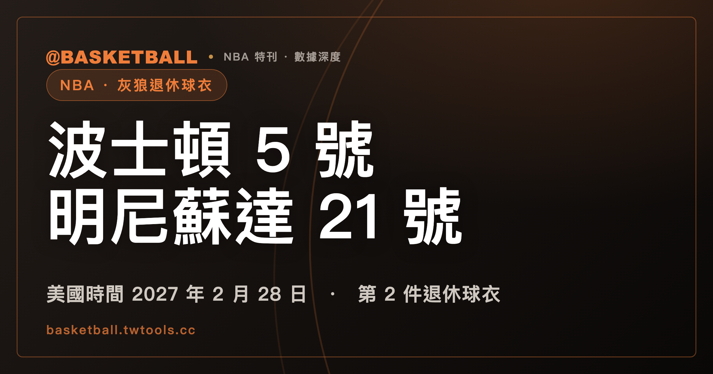

賈奈特 21 號將在灰狼退休：2027 年儀式、14 季與兩個號碼
灰狼宣布將於美國時間 2027 年 2 月 28 日、台北時間 3 月 1 日退休賈奈特（Kevin Garnett）的 21 號。這將是球隊第 2 件退休球衣；他的塞爾提克 5 號已於 2022 年升上屋樑。

NBA 專題｜球衣退休與隊史紀錄
2026 年 11 月 7 日更新：灰狼官方活動頁仍列美國時間 2027 年 2 月 28 日的球衣退休夜，並已提供 KG Flex Plan 票務入口。儀式尚未舉行；下文的時間安排依球隊公告。
賈奈特（Kevin Garnett）的球衣早已掛在 NBA 球館屋樑上，只是先掛上去的，是波士頓的 5 號。塞爾提克在 2022 年辦完儀式後，明尼蘇達灰狼的球迷還得再等幾年，才等到屬於自己的 21 號。
灰狼把日期訂在美國時間 2027 年 2 月 28 日，主場對塞爾提克賽後。球隊在 2026 年 8 月 14 日宣布時，將他列為隊史第 2 位獲得球衣退休榮譽的球員，第一位是他當年的隊友 Malik Sealy。
兩支球隊、兩個號碼，分別留下他生涯不同的一段。
21 號退休夜，排在對塞爾提克賽後
儀式地點是灰狼主場 Target Center，對應台北日期為 2027 年 3 月 1 日。官方公告把儀式排在與塞爾提克的比賽結束後，這場比賽也是 NBC 的 Sunday Night Basketball 場次。
球隊把這一夜放在整季的 KG 主題活動中央。其他主題分別回到他的選秀、全明星 MVP、年度 MVP 與西區決賽。對球迷來說，可以在不同場次重看同一名球員留下的幾段記憶；球衣退休夜則把 21 號正式留在球館裡。
灰狼的官方活動頁已提供主題場次與票務入口。活動、贈品與可購方案可能調整，實際安排以球隊頁面為準，不必拿 8 月公告時尚未公布的資訊當成現在仍沒有。
灰狼的 2 號與波士頓的 5 號，讓「第二件」有了對照
灰狼官方歷史頁記載，Malik Sealy 的 2 號於 2000 年 11 月 4 日升上 Target Center 屋樑。2026 年宣布賈奈特退休計畫時，球隊直接寫他將加入 Sealy，成為第 2 人。
球館裡的致敬不一定都是退休球衣。灰狼也曾為前總教練桑德斯（Flip Saunders）升起紀念旗幟；那與替球員退休背號，是不同的榮譽形式。
波士頓那一端已經完成。美國時間 2022 年 3 月 13 日，塞爾提克對獨行俠的比賽結束後，賈奈特的 5 號升上 TD Garden，旁邊是他參與贏得的 2008 年總冠軍旗。NBA 官網刊載的美聯社報導記載，他是塞爾提克第 24 位背號退休者。
| 球隊 | 號碼 | 儀式狀態 |
|---|---|---|
| 波士頓塞爾提克（Boston Celtics） | 5 | 2022 年 3 月 13 日已舉行 |
| 明尼蘇達灰狼（Minnesota Timberwolves） | 21 | 訂於 2027 年 2 月 28 日、美國時間，賽後舉行 |
同樣一名球員，在波士頓是第 24 人，在明尼蘇達將是第 2 人。這反映的是兩支球隊各自累積的歷史，不能拿名次高低衡量球員對球隊的重要性。
塞爾提克另一位退休背號的老將尼爾森（Don Nelson），則在球員生涯之後走上教練之路，相關背景見尼爾森與 Nellie Ball。
他替灰狼打了 14 季，21 是號碼，也是整個生涯季數
賈奈特 1995 年以選秀第 5 順位加入灰狼，第一段從 1995-96 打到 2006-07。轉往塞爾提克與籃網後，他在 2014-15 回到明尼蘇達，並於 2015-16 再打一季。
兩段合計 14 個有灰狼出賽紀錄的球季，總出賽 970 場。灰狼 8 月官方公告同樣使用 14 季，不能只算最初連續效力的 12 季，把返隊的兩季漏掉。
他的整個 NBA 生涯是 21 季，球衣號碼也恰好是 21；兩個 21 都不代表灰狼年資。與其他長生涯球員的比較，可接著看詹姆斯第 24 季專題。
14 季留下的六項累積，不必靠「史上唯一」才有分量
灰狼官方退休公告列出賈奈特退役時保持的多項隊史領先紀錄。把其中得分、籃板、助攻、抄截、阻攻與出賽放在一起，是下面這組 NBA 例行賽累積：
| 項目 | 賈奈特的灰狼累計 |
|---|---|
| 得分 | 19,201 |
| 籃板 | 10,718 |
| 助攻 | 4,216 |
| 抄截 | 1,315 |
| 阻攻 | 1,590 |
| 出賽 | 970 場 |
這 6 項呈現的是他在同一支球隊如何同時累積得分、組織、防守與出賽。它們來自灰狼公告，不是把他在波士頓與籃網的數據一起加回明尼蘇達。
若要再往前說「全聯盟史上只有他」，需要的是另一份比較：逐隊、相同統計項目、相同截點，也要交代 ABA、已消失球隊，以及搬遷隊史怎麼算。抄截與阻攻又到 1973-74 才成為 NBA 官方統計，早年球員不能直接和全生涯都有這兩項紀錄的人對比。
灰狼這一隊的六項累積，並不足以單獨推出全聯盟唯一。聯盟與球隊的基本架構可參考 NBA 聯盟指南；這裡保留有來源的灰狼紀錄，不替另一個更大的比較下結論。
2003-04 的 MVP 與西區決賽，是同一段高峰
2003-04，賈奈特拿下 NBA 年度最有價值球員（Most Valuable Player，MVP）。灰狼官方公告把那一季列為隊史首個、也是公告時唯一的年度 MVP 球季；同季球隊拿到首座分組冠軍，第一次打進西區決賽。
這些成績讓球衣退休不只是把一張生涯數據表搬到屋樑上。他在灰狼從年輕選秀球員打到年度 MVP，離開後又回到生涯起點；球隊在 2025 年 12 月宣布他回歸擔任大使（Team Ambassador），再把退休儀式排進下一季。
官方 8 月公告裡，賈奈特也感謝洛爾（Marc Lore）與 A-Rod（Alex Rodriguez）。同月的球團控股權協議，另見灰狼與山貓股東換位的經過。這是當時球隊與賈奈特重新建立關係的背景，股權交易本身則有各自的程序與時間軸。
等到 2027 年那場儀式完成，21 號才會正式與 Sealy 的 2 號並列。在此之前，確定的是球隊已公布的安排，以及賈奈特留在明尼蘇達的那 14 季。
常見問題
賈奈特的 21 號球衣什麼時候退休？
灰狼訂在美國時間 2027 年 2 月 28 日、台北時間 3 月 1 日，主場 Target Center 對塞爾提克賽後舉行。這是球隊已公布的安排，儀式尚未舉行。
灰狼以前退休過誰的球衣？
Malik Sealy 的 2 號，2000 年 11 月 4 日升上屋樑。灰狼宣布賈奈特計畫時，將他列為隊史第 2 位背號退休者。桑德斯（Flip Saunders）的紀念旗幟是另一種致敬，不算球員退休背號。
賈奈特在灰狼打了幾季？
14 季，970 場。第一段 1995-96 至 2006-07 是 12 季，返隊後又在 2014-15、2015-16 出賽；不能把後兩季漏掉。他的整個 NBA 生涯才是 21 季。
兩隊退休的是同一個號碼嗎？
不是。塞爾提克在 2022 年已退休他的 5 號，灰狼計畫退休的是 21 號。兩邊都依他效力該隊時的號碼紀念。
「六項隊史第一」是什麼意思？其他球隊沒有嗎？
這裡選的是得分、籃板、助攻、抄截、阻攻與出賽，灰狼官方公告列出賈奈特在這些項目的隊史領先累積。但灰狼單隊紀錄不足以判定其他球隊都沒有同類球員；要回答全聯盟唯一，還須完整、一致的跨隊比較。
有媒體說賈奈特是「史上唯一」嗎？
有。三立新聞網 2026 年 8 月 15 日的報導（鏡週刊同步刊載），曾把得分、籃板、助攻、抄截、阻攻這 5 項稱為「史上唯一」。這是媒體對 5 項紀錄的描述，不含出賽；加上出賽的 6 項不能混算。至於全聯盟比較是否完整，仍不能只憑灰狼單隊公告確認。
賈奈特在灰狼拿過 MVP 嗎？
拿過，2003-04 賽季。灰狼官方退休公告把它稱為隊史首個、也是公告當時唯一的年度 MVP 球季；同季球隊第一次進入西區決賽。
還有誰被兩支以上的球隊退休過背號？
卡特（Vince Carter）是已完成的例子：暴龍在 2024 年退休他的 15 號，籃網在 2025 年也退休 15 號。這不等於所有多隊退休者都穿同號；賈奈特的波士頓 5 號與明尼蘇達 21 號就不同。若要算總人數，還得先決定全聯盟退休、未曾效力該隊與非球衣旗幟是否納入。
資料來源
- 三立新聞網報導，鏡週刊同步刊載，2026 年 8 月 15 日：媒體確實使用五項「史上唯一」描述的例子，不作全聯盟比較已獲證明的依據。
- 灰狼宣布賈奈特 21 號退休日期，2026 年 8 月 14 日官方發布；日期、14 季與灰狼累計紀錄。
- 灰狼 KG 活動與票務入口、退休背號歷史。
- NBA 官網刊載美聯社：塞爾提克完成 5 號退休儀式，2022 年 3 月 14 日。
- NBA：暴龍宣布 Lowry 退休計畫，回述卡特 2024 年已完成的儀式；2025 年 1 月 25 日賽事與卡特退休夜紀錄。